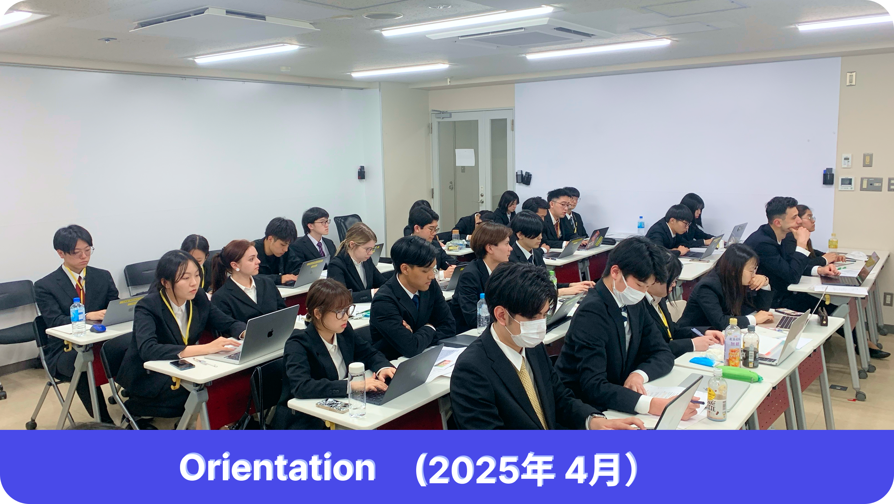
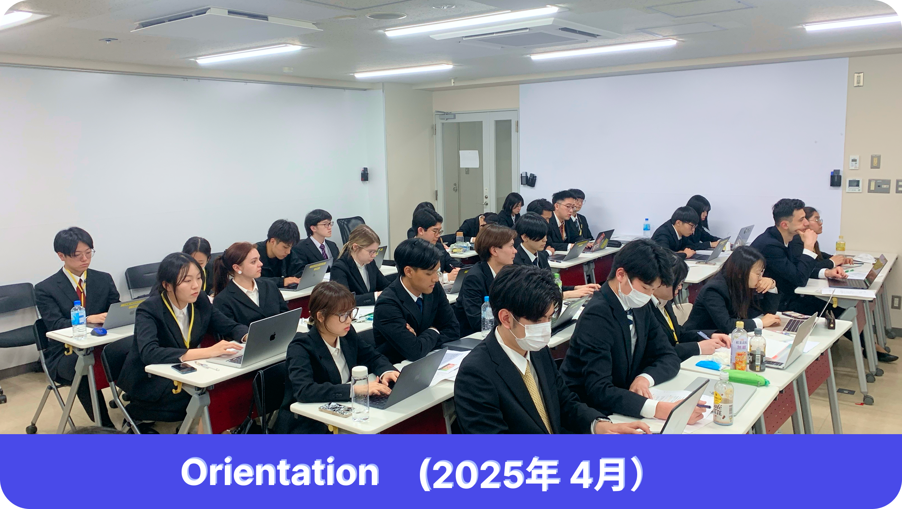

日本電子専門学校 Webデザイン科
スペシャルサイト
明るい未来への一歩
—A step towards a brighter future—
Webデザイン科とは
Webデザイン学科は、ウェブサイトの作成、デザイン、
そして維持管理の方法を学生に教えることに重点を置いた
学術プログラムです。創造性と技術スキルを融合させ、
グラフィックデザイン、ユーザーエクスペリエンス（UX）、
ユーザーインターフェース（UI）デザイン、コーディング
（HTML、CSS、JavaScript）、モバイルとデスクトップ向
けのレスポンシブデザインといったトピックを網羅します。
Webデザイン科に関する職種
フロントエンドエンジニア
デザイナー
ディレクター
Webデザイン科の特徴
実技試験
実技試験では、実際の
Web デザイン スキルが評価され、
詳細な説明、サンプル問題、創造性とスキルを
テストする機会が含まれます。
創造性
Web デザインにおける創造性は、
アイデアを魅力的なデジタル エクスペリエンスに変換し、
学生に革新とインスピレーションを与える力を与えます。
思考
思考力を研ぎ澄まし、
問題を解決し、
ユーザーにインスピレーションを
与える革新的なウェブデザインを
作り上げましょう。
チームワーク
チームワークを習得し、
コラボレーションと
創造性の共有を
通じてシームレスな Web デザインを構築します。
技術スキル と 人間関係マナー を
学べる学科
学生生活

 


建物と場所

よくある質問
留学生でも安心して就活できますか？
▼
はい、留学生でも安心して就活できます！
JLPT N2レベルがあれば、多くの企業でコミュニケーションが可能ですし、
英語力や技術力が強ければ、N2でも外資系やスタートアップに応募できます。
ITの仕事に就くために、どのくらいの日本語レベルが必要ですか？
▼
ITの仕事では、通常JLPT N2またはN1のレベルが求められることが多いです。
ただし、会社によっては英語力やプログラミングスキルが重視される場合もあります。
N2レベルの日本語なら、基本的なコミュニケーションは問題ありませんが、
専門用語を学ぶとさらに有利です。
日本語がまだN3レベルですが、IT企業で働けますか？
▼
N3レベルでも、英語が得意で技術力が高い場合、
国際的なIT企業やスタートアップで働くチャンスがあります。
ただし、日本の多くの企業はN2以上を希望します。
N3の学生は、日本語学校やオンラインコースで勉強を続けて、
N2を目指すことをおすすめします。
インターンシップで実務経験を積むのも良い方法です。
学生ビザから就労ビザに変更するのは難しいですか？IT企業で働けますか？
▼
学生ビザから就労ビザに変更するのは、
難しくありませんが、準備が必要です。
まず、IT関連の仕事に内定をもらうことが大切です。
内定後、会社がビザ申請の書類をサポートしてくれます。
大学のキャリアセンターや出入国在留管理局のウェブサイトで必要な書類を確認しましょう。
通常、卒業証明書や内定通知書が必要です。